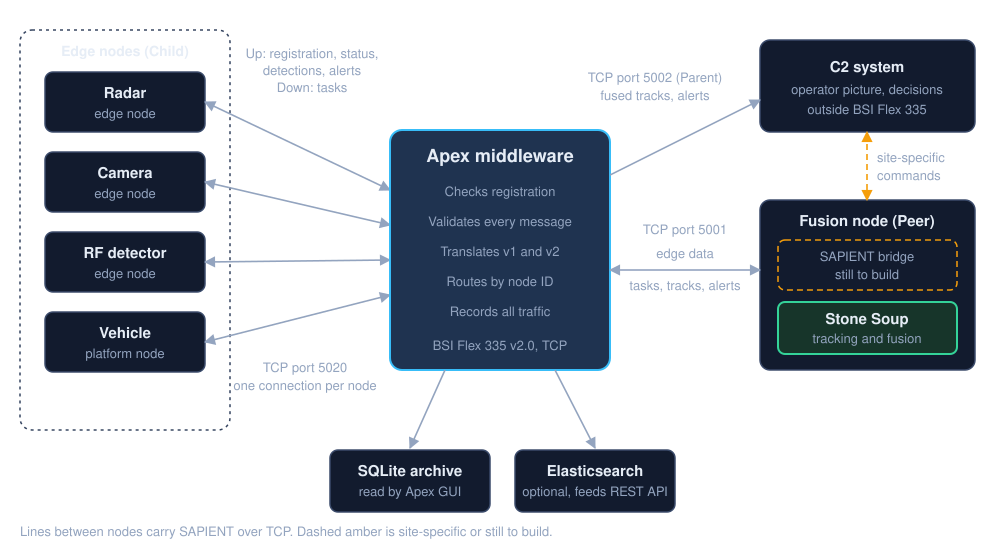
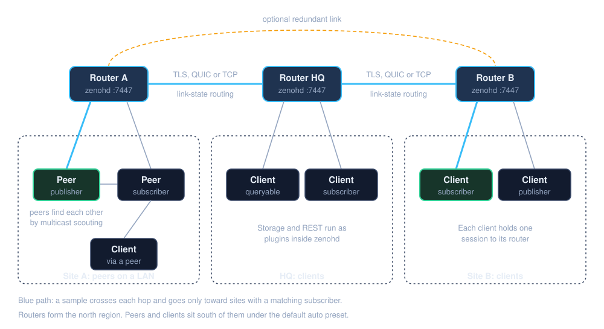
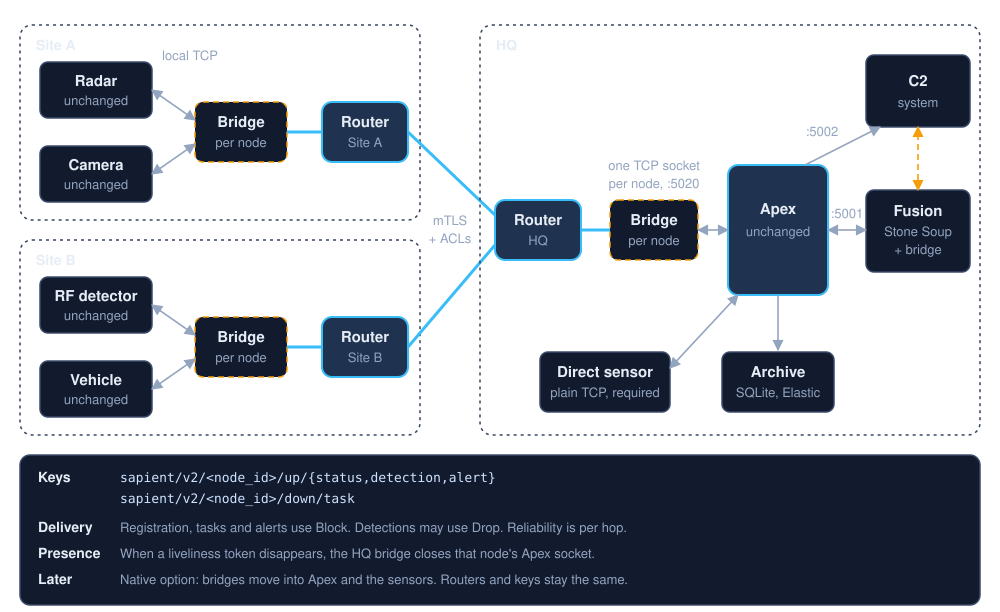
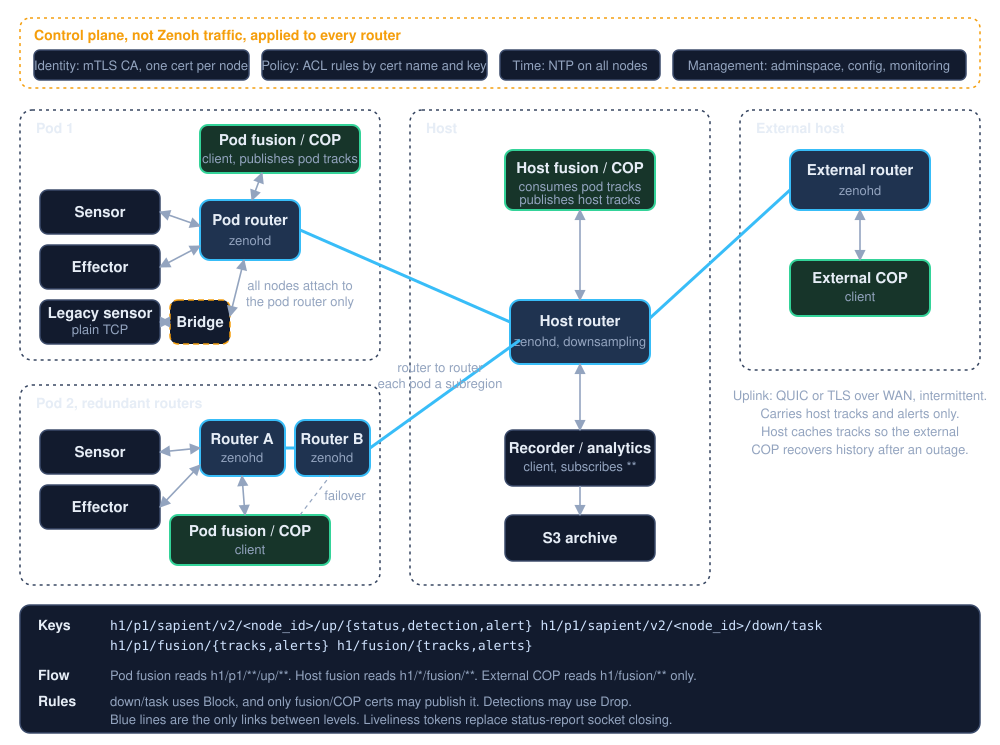
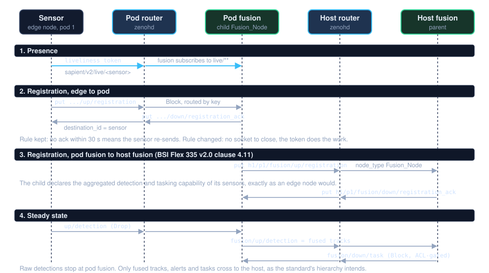
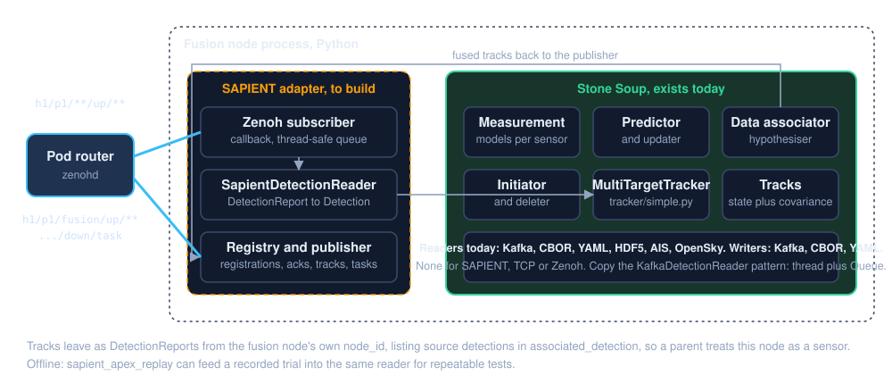

The question in one sentence
SAPIENT is the UK standard that lets radars, cameras, jammers and a central "fusion" brain from different vendors talk to each other. Today they talk over ordinary network connections, one cable-like link per sensor, all meeting at a piece of software called Apex. Zenoh is an open-source system that moves data between many machines and sites by topic rather than by cable. The question is whether swapping the cables for Zenoh buys us anything.
What we have today
Every sensor opens one connection to Apex. Apex checks that each message is well formed, records it, and passes it to the fusion node, which builds the overall picture and sends tasks back ("camera, look over there"). A command-and-control screen, C2, receives the fused result. Stone Soup, an open-source tracking toolkit, is a candidate to be that fusion brain, but it cannot speak SAPIENT yet.

What Zenoh is
Zenoh is more like a postal network than a switchboard. Each site has a router. A sensor hands its message to the local router with an address such as site A / radar 1 / detections. Routers pass it along only to places where someone has asked for that address. Nobody needs to know which machine the fusion node is on, and if a link between sites fails and another exists, the mail finds the other way.

Zenoh also brings things TCP alone does not: a message can be marked urgent and jump the queue, routers can thin out a flood of detections before a slow radio link, each node proves who it is with a certificate, and a router can refuse messages a node is not allowed to send.
Option A: keep Apex, add Zenoh between sites
Nothing changes for the sensors or for Apex. A small "bridge" program sits next to each sensor and another next to Apex. The bridges carry the SAPIENT messages across the Zenoh network and hand them back as ordinary connections at the far end. It is the safe first step: it can be tested without touching existing equipment, and the standard's requirement that TCP is always supported is met automatically.

Option B: build on Zenoh from the start
This is the design discussed in the recent meeting: groups of sensors and effectors form pods, pods report to a host, and the host reports to an external host. Each level has its own router and its own fusion/COP application. There is no Apex in the message path. Its jobs are shared out: routers deliver, each fusion node checks messages, a recorder writes everything to storage, and a bridge translates for old sensors.

Is it worth it?
| Your deployment looks like | Recommendation |
|---|---|
| One site, one network, a handful of sensors, one Apex | Keep TCP. Add encryption with TLS or a VPN. Zenoh would add work without a gain. |
| Several sites or vehicles, radio or satellite links, sensors behind firewalls | Start with Option A. It gives the cross-site fabric and security without touching sensors or Apex. |
| Pods, hosts and an external host, effectors that must be commanded safely, fusion at each level | Option B is the simpler way to get hierarchy, filtering and permissions than wiring Apex instances together. |
Speed is not the reason to do this. Apex processes messages one at a time, and Zenoh changes nothing about that unless Apex leaves the message path.
Two things called "hierarchy"
The SAPIENT standard has a hierarchy: a junior fusion node can report to a senior one, behaving toward it exactly like a sensor. That is an organisation chart, about who reports to whom. The pod / host / external-host layout is a set of buildings and the roads between them, about where the messages travel. They line up naturally, pod fusion reporting to host fusion reporting to the external host, but the roads do not create the org chart by themselves. Each fusion node still has to register with the one above it, and only its summarised tracks should travel up, not every raw detection.

Where Stone Soup fits
Stone Soup is Dstl's open-source toolkit for turning noisy detections into smooth tracks of moving objects. It is exactly the engine a fusion node needs, and it already contains the filters, trackers and association logic. What it lacks is a way to receive SAPIENT messages and send SAPIENT tracks back out. That adapter has to be written whichever option is chosen. Over TCP it would connect to Apex; over Zenoh it would subscribe to its pod's detections. The tracking core is the same in both cases.

Decisions for the team
- Which deployment are we designing for? One site, or pods and hosts? This single answer picks between "keep TCP", Option A and Option B.
- Who may command an effector? Pod fusion, host fusion, or only a human at the COP. The answer becomes a permission rule in the routers, not a convention.
- How much of Apex do we keep? Its archive and GUI can stay as a consumer behind a bridge even if it leaves the message path.
- Who builds the Stone Soup adapter? It is needed in every option and is the natural first piece of engineering.